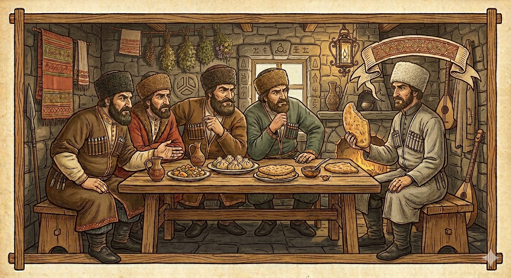

И.А. Дахкильгов. Хьехаме дувцарш - поучительные рассказы-притчи.
И.А. Дахкильгов. Хьехаме дувцарш - поучительные рассказы-притчи. Из ингушского фольклора.

Мел юар модзаца юъ
Цхьана вӀашагӀакхийтта багӀаш, къонахаша къамаьл доладаьд, хьанна фу юъ, яхаш. Цхьанне ше думе буъ аьннад, вокхо кхерза дулх дуаш ва ше, кхоалагӀчо кхийхкар дуъ ше, оалаш, цхьацца доккхалаш деш, къамаьлаш даьд. Царна юкъе йист ца хулаш ваьгӀав цхьа миска саг. Хьо а йист хила, аьннад цунга. - Са доккхал де хӀама дац, - аьннад. - МоллагӀа йиаь, цаӀ ца юаш-м хургвац! - Бакъдар шоана дезе, айса юаш мел йола хӀама модзаца юъ аз, - аьннад мискача саго. - Из фуд? - аьнна, тохобенна къонахий, - тхона наггахьа мара даа ца кхоачаш дола модз хьона ма дика кхаьчад из хӀарача денна даа. ВӀаштехьа дац, хила йиш йолаш а дац, - аьнна, хоададаьд. Циггач аьннад, йоах, къеча саго: - Хоз наьха санна мецденнача хана еккъа сискал яал оаш. Из модзали шекарали мерзагӀа-м даьсара хетаргья шоана.
РУССКИЙ
Все ем с медом
По какому-то поводу собрались мужчины. За беседою у них разговор зашел о том, кто что ест. Один похвалялся, что часто кушает курдюки. Другой говорил, что он любит жаркое. Третий отметил, что ему больше по душе вареное мясо. Среди присутствующих один мужчина отмалчивался. По всему было видно, что он бедный человек. - Чего ты сидишь и молчишь? - обратились к нему. - Мне нечем перед вами похвастаться, - ответил этот мужчина. - Но ведь что-то ты все равно кушаешь! Скажи, что? - Если говорить по правде, то все, что я ни ем, я все это ем с медом, - ответил он. - Что мы слышим? - удивились мужчины, - как это ты постоянно ешь мед, тогда как мы, более состоятельные, чем ты, едим мед лишь изредка? Что-то тут не так, такого быть не может, - отрезали они. - Вы сначала как следует проголодайтесь, а потом съеште просто чурек, без ничего. Уверяю, он вам покажется слаще меда, - ответил бедняк.
ENGLISH
I eat everything with honey
A group of men had gathered for some reason. As they chatted, the conversation turned to what they liked to eat. One boasted that he often ate fat tails. Another said he loved roast meat. A third remarked that he preferred boiled meat. One man among those present remained silent. It was plain to see that he was a poor man. 'Why are you sitting there in silence?' they asked him. 'I have nothing to boast about to you,' replied the man. 'But surely you must eat something! Tell us, what?' 'To tell you the truth, whatever I eat, I eat it with honey,' he replied. 'What's this?' the men exclaimed in surprise. 'How can it be that you eat honey all the time, whereas we, who are better off than you, only eat it now and then? Something's not right here; that can't be true,' they retorted. 'First, let yourselves get properly hungry, and then eat just a churek, without anything else. I assure you, it will seem sweeter than honey to you,' replied the poor man.
НОХЧИЙН
Дерриге а суна мозах дуьйцу
ХӀун бахьане долуш, стеаш гулбевли. Къамелаш деш, дуьйцу долайелла, мила хӀун юу. Цхьаммо доккхал деш дийцина, ша хийла мохал юу. Кхечо аьлла, ша кӀорге бинчух веза. КхоалагӀчо тӀетӀа а аьлла, шена дезагӀа хеталу бийна жижиг. Кхечу нахах юккъехь цхьа стаг вагӀара, дуьйцуш доцуш. Дерриге а гуш хилла, из къен стаг хилар. - ХӀунда хьо Ӏаш дуьйцуш доцуш? - хаьттина цунга. - Шуна хьалха доккхал ца хуьлу сона, - жоп делла хӀокху стага. - Амма хӀума-хӀума ю ахьа юу! Ала, хӀун ду? - Бакъдерг дийца хилча, дерриге ас юург, ас мозах юу, - жоп делла цо. - ХӀун хезна тхуна? - цецбевли стеаш, - муха ду иштта, ахьа гуттар мозах дуьйла, ткъа тхо, ахьал бахьаьрчий болу, наггахь бен мозах ца дуьйла? ХӀума нийса дац хӀокхуна, хила ца тарло хӀара, - аьлла цара. - Шу хьалха дика меца хила, тӀаккха бепиг бен ца юуш кара. Ас ца хатта, из мозах дезагӀа хета шуна, - жоп делла къенчо.
ПОГОВОРКИ
Бетта етт болчун шун тӀара хьоанал ийшаяц. Имеющий дойную корову имел сытную пищу. One with a milking cow never went hungry. Бетта йетт болчун шун тӀера хьанал эшна йац.Болх бе эттача, тӀатеӀӀе болх бе; яа Ӏохайча, виззалца яа. Начал работу – трудись усердно; сел за стол – ешь досыта. Once you start work, work hard; once you sit down to eat, eat your fill. Болх ба хӀоьттича, тӀетӀӀе болх бе; йаа хӀоьттича, вуззалца йаа.Даьттаца-ма вирнахча а юаеннай. С маслом съешь и “ишачий сыр” (одна из пород большого гриба). With butter, one will even eat lowly mushrooms. Даьттаца-м вирнаьхча а йаайелла.Дика къонахий хила гӀийртараш нохара тӀаьнаш бе доахкадаьчар дӀабийхкаб. Кичащихся мужчин одолели и связали простые пахари. Ordinary ploughmen overpowered and bound men who boasted of their strength. Дика къонахий хила гӀийртинарш нохан тӀаьнаш беш бохкучу наха дӀабихкина.Доахан долча цӀагӀа хьоанал ийшаяц. Кто держит скот, у того на столе достаток. One who keeps livestock never lacks for a good table. Даьхний долчу цӀахь хьанал эшна йац.Дукха диача, модз а къахьлу. И мед горчит, когда его съешь слишком много. Even honey turns bitter when eaten in excess. Дукха диъча, моз а къаьхьало.Къа ца хьегаш яьккха маькх мишта яа еза хац. Кому достался дармовой хлеб, тот не знает, как его есть. One who came into bread without effort doesn't know how to appreciate eating it. Къа ца хьоьгуш даьккхина бепиг муха даа деза хаац.Къе саг миста берхӀа кхоачабаларах кхийрав. Бедняк боялся, что рассол от сыра кончится (и придется чурек есть сухим). The poor man worried the sour whey might run out, leaving him to eat his bread dry. Къен стаг муьста берам кхачабаларах кхийрина.Мерза дале а модз ца дуараш (ца дезараш) хул. Хотя мед и сладок, но и его кое-кто не ест (не любит). Though honey is sweet, there are still some who don't care for it. Мерза далахь а моз ца дуарш (ца дезарш) хуьлу.Мецвенначоа укх дунен тӀа мел долчул мерзагӀа хет ше хьалха тӀакхаьчар. Для проголодавшегося самая вкусная на свете еда, которая первая ему подвернулась. For a starving man, the tastiest food in the whole world is whatever comes his way first. Мацвеллачун хӀокху дуьнен тӀехь мел долчул мерзах хета ша хьалха тӀекхаьчнарг.Мистъеннача шуро къаръяьй керда яьккхар. Прокисшее молоко переспорило свежее. Soured milk outargued the fresh milk. Мустйеллачу шуро къарйина керла йаьккхинарг.Туха чам байначун хина чам хиннабац. Кто потерял вкус соли, тот забыл вкус воды. One who lost the taste for salt has forgotten the taste of water too. Туьхан чам байначун хина чам хилла бац.Хина чам хьогвенначоа мара бовзац. Вкус воды знает только испытывающий жажду. Only one who thirsts truly knows the taste of water. Хин чам хьагвеллачун бен бовзац.